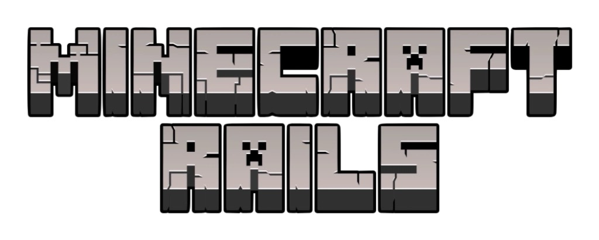

SLIDE / ESCAPE / BOOM!

マイクラレールズ — レールをつないで、にげきれ。
空いているマスへ、レールをスライドしよう。
01 / つなぐ
空きマスのとなりをタップ、またはスワイプ。パネルは回転できない。
02 / 先をよむ
通ったレールは固定されて動かせない。十字だけは、別方向にもう一度通れる。
03 / にげる
クリーパーは足あとを追う。追いつかれる前に、右下の駅へ！
SLIDE / ESCAPE / BOOM!

マイクラレールズ — レールをつないで、にげきれ。
空いているマスへ、レールをスライドしよう。
空きマスのとなりをタップ、またはスワイプ。パネルは回転できない。
通ったレールは固定されて動かせない。十字だけは、別方向にもう一度通れる。
クリーパーは足あとを追う。追いつかれる前に、右下の駅へ！